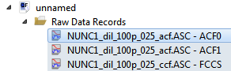
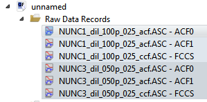

$$qf_commondoc_header.start$$ $$qf_commondoc_header.end$$
Tutorial
When you perform 2-color FLuorescence Cross-Correlation Spectroscopy (FCCS) measurements, you acquire three correlation curves for each sample: Two autocorrelations in two color channels (e.g. ACF0: green, ACF1: red) and one cross-correlation (FCCS/CCF) between the two channels. These three curves are usually imported into a QuickFit project as three RDRs:

For a first look at the data, you often want to see these three curves in one plot and calculate the relative amplitude of the CCF-curve. This is possible in QuickFit with a simple function:
- You have to make sure, that the ACF0+ACF1+FCCS are within the same RDR group, so QuickFit knows that these three files belong together. You can see the groups by the colored background in the project (e.g. there are two groups in the following example):

For certain FCS-dataformats, this is already done, when importing (e.g. Confocor3 files) and for others, this has to be done by hand:
- In the main window, click on Tools | Project Tools | edit groups, roles and folders.
- In the window, that pops up, you have to select the same group (column group) in the table for allr ecords, that should be placed in that group. If no groups exist yet, you have to selec --- new group --- and enter the name of the new group.
- After clicking on OK, the coloring in the project should have changed.
- Now open the RDR editor of any RDR in a group, by double-clicking the entry in the project.
- Select the tab Cross-Correlation Curve:
 There you see the desired overlay plot and it also already calculates the relative CCF-amplitude (bottom-right, Result, ...:). These amplitudes are cross-talk corrected according to the method, described in $$ref:BACIA2012:K. Bacia, Z. Petrášek, and P. Schwille Correcting for spectral cross-talk in dual-color fluorescence cross-correlation spectroscopy., Chemphyschem. 13(5):1221-31. , doi: 10.1002/cphc.201100801, http://www.ncbi.nlm.nih.gov/pmc/articles/PMC3495304/$$:
$[ \mbox{relCCF}_{red}=\frac{\hat{G}_{CCF}}{\hat{G}_{ACF1}},\ \ \ \ \ \mbox{relCCF}_{green}=\frac{\hat{G}_{CCF}}{\hat{G}_{ACF0}} ]$
where $(G_{CCF})$ and $(G_{ACF...})$ are the cross-talk-corrected amplitudes of the cross- and auto-correlation function, given in the index. These amplitudes are estimated by an average over the correlation curves within the given range (amplitude range, min/max at the lower-right, grey range in the plot). The cross-talk is assumed to happen from the green into the red channel only. Then the corrected correlation amplitudes are:
$[ \hat{G}_{ACF0}=G_{ACF0} ]$
$[ \hat{G}_{ACF1}=\frac{\kappa^2 F_0^2G_{ACF0}+F_{1}^2G_{ACF1}-2\kappa F_{0}F_{1}G_{CCF}}{(F_{1}-\kappa F_{0})^2} ]$
$[ \hat{G}_{CCF}=\frac{-\kappa F_{0}G_{ACF0}+F_{1} G_{CCF}}{F_{1}-\kappa F_{0}} ]$
In these equations $(F_{0/1})$ are the background-corrected intensities in the green (0) and red (1) color channel and $(\kappa)$ is the cross-talk coefficient between the green and the red channel (which you can estimate from the background-corrected intensities in the two channels for a green-only sample).
There you see the desired overlay plot and it also already calculates the relative CCF-amplitude (bottom-right, Result, ...:). These amplitudes are cross-talk corrected according to the method, described in $$ref:BACIA2012:K. Bacia, Z. Petrášek, and P. Schwille Correcting for spectral cross-talk in dual-color fluorescence cross-correlation spectroscopy., Chemphyschem. 13(5):1221-31. , doi: 10.1002/cphc.201100801, http://www.ncbi.nlm.nih.gov/pmc/articles/PMC3495304/$$:
$[ \mbox{relCCF}_{red}=\frac{\hat{G}_{CCF}}{\hat{G}_{ACF1}},\ \ \ \ \ \mbox{relCCF}_{green}=\frac{\hat{G}_{CCF}}{\hat{G}_{ACF0}} ]$
where $(G_{CCF})$ and $(G_{ACF...})$ are the cross-talk-corrected amplitudes of the cross- and auto-correlation function, given in the index. These amplitudes are estimated by an average over the correlation curves within the given range (amplitude range, min/max at the lower-right, grey range in the plot). The cross-talk is assumed to happen from the green into the red channel only. Then the corrected correlation amplitudes are:
$[ \hat{G}_{ACF0}=G_{ACF0} ]$
$[ \hat{G}_{ACF1}=\frac{\kappa^2 F_0^2G_{ACF0}+F_{1}^2G_{ACF1}-2\kappa F_{0}F_{1}G_{CCF}}{(F_{1}-\kappa F_{0})^2} ]$
$[ \hat{G}_{CCF}=\frac{-\kappa F_{0}G_{ACF0}+F_{1} G_{CCF}}{F_{1}-\kappa F_{0}} ]$
In these equations $(F_{0/1})$ are the background-corrected intensities in the green (0) and red (1) color channel and $(\kappa)$ is the cross-talk coefficient between the green and the red channel (which you can estimate from the background-corrected intensities in the two channels for a green-only sample).
Finally the red dashed line is the cross-talk-corrected amplitude of the red ACF (ACF1) and the blue dashed line is either the cross-talk-corrected CCF-amplitude, or the level of CCF, which can be explained by crosstalk only (depending on what you choose in the field rel. CCF display mode).
$$note:You should choose the range of τ-values, over which to average the CFs (parameters amplitude range, min/max) such, that they are larger than the triplet contribution to the ACFs and mostly within the flat part of the ACFs. So typically a range of 10-30µs is fine, if you diffusion time is a few 100µs.$$
Reference
$$references$$